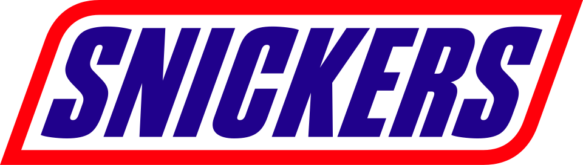
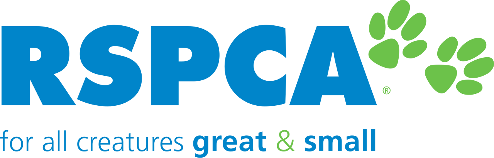
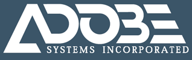

홈 > 브랜드 매거진 > Stella Artois
Stella Artois
스텔라 아르투아(Stella Artois)는 벨기에 뢰번에 뿌리를 둔 필스너 라거로, 1366년 덴 호른 양조장 전통과 사냥용 뿔나팔 엠블럼을 헤리티지로 삼는다. 2023년 존스 놀스 리치가 시각 체계를 전면 정비했다.
산업 분야 브랜드·비즈니스 · 공개 등급 편집 검수 · 브랜드 평가 4 ★

한눈에 보는 브랜드
스텔라 아르투아는 벨기에 뢰번(Leuven)에 뿌리를 둔 필스너 라거로, 그 양조 전통은 뢰번의 덴 호른(Den Hoorn) 양조장으로 거슬러 올라가며 브랜드는 1366년을 기원 연도로 표기한다. 세바스티앙 아르투아가 18세기 초 이 양조장을 인수해 브라스리 아르투아로 개명했고, 1925년 성탄절용으로 처음 양조된 특별 맥주가 호평을 받아 이듬해 라틴어로 '별'을 뜻하는 '스텔라(Stella)'를 붙여 정식 등록되며 연중 생산으로 전환됐다.
현재 세계 최대 맥주 기업 안호이저-부시 인베브(AB InBev) 소유다.
브랜드 관점
공개 메타데이터와 에셋 요약을 기준으로 아이덴티티 구조를 확인할 수 있습니다.
브랜드 아이덴티티
브랜드 마크의 핵심은 덴 호른('호른'은 뿔나팔을 뜻함)에서 유래한 사냥용 뿔나팔로, 과거 주점이 맥주 판매를 알리던 신호 도구가 영구 엠블럼으로 자리 잡은 것이다. 현행 마크는 세리프 워드마크와 함께 카르투슈(장식 테두리) 안에 팔각 별, 뿔나팔, 홉 잎, 그리고 기원 연도 '1366'을 담는다.
2023년 영국 디자인 스튜디오 존스 놀스 리치(JKR)가 주도한 리브랜딩에서 수평형 로고로 정비되고, 팡그램 팡그램(Pangram Pangram) 파운드리와 협업한 전용 서체 두 종이 새로 개발됐으며, 색 팔레트와 패키지 구조가 전면 개편됐다. 디자인 언론은 이 작업의 정체성 색을 레드·화이트·블랙 조합으로 설명한다.
제품과 서비스
대표 제품과 서비스 정보는 편집 검수 후 공개됩니다.
사람들
현재 상태
스텔라 아르투아는 AB InBev 산하의 글로벌 프리미엄 라거 브랜드로 현재까지 활발히 판매되며, 2023년 JKR 리브랜딩으로 정립된 시각 체계를 운용하고 있다.
타임라인
BI/CI 변천사
확인된 BI/CI 이미지가 아직 없습니다.
함께 읽을 브랜드

브랜드·비즈니스 · 편집 검수SnickersSnickers는 2026년에 기록된 Designed by jkr 계열의 브랜드 아이덴티티 사례입니다. jkr, Studio Drama가 아이덴티티 작업의 디자이너로...
 브랜드·비즈니스 · 편집 검수Fanta
브랜드·비즈니스 · 편집 검수FantaFanta는 2023년에 기록된 Designed by jkr 계열의 브랜드 아이덴티티 사례입니다. jkr가 아이덴티티 작업의 디자이너로 기록되어 있습니다. 로고, 타...

브랜드·비즈니스 · 편집 검수RSPCARSPCA는 2024년에 기록된 Designed by jkr 계열의 브랜드 아이덴티티 사례입니다. jkr가 아이덴티티 작업의 디자이너로 기록되어 있습니다. 로고, 타...
 브랜드·비즈니스 · 편집 검수Walmart
브랜드·비즈니스 · 편집 검수WalmartWalmart는 2025년에 기록된 Designed by jkr 계열의 브랜드 아이덴티티 사례입니다. jkr가 아이덴티티 작업의 디자이너로 기록되어 있습니다. 로고,...
브랜드·비즈니스 · 편집 검수YahooYahoo는 2026년에 기록된 Designed by jkr 계열의 브랜드 아이덴티티 사례입니다. jkr가 아이덴티티 작업의 디자이너로 기록되어 있습니다. 로고, 타...
7u
7up
브랜드·비즈니스 · 편집 검수7up7up는 2023년에 기록된 Big Brands 계열의 브랜드 아이덴티티 사례입니다. Here Design, Pepsi Co.가 아이덴티티 작업의 디자이너로 기록되어...

브랜드·비즈니스 · 편집 검수AdobeAdobe는 2025년에 기록된 Designed by Mother 계열의 브랜드 아이덴티티 사례입니다. Mother Design가 아이덴티티 작업의 디자이너로 기록되...
Al
Allies
브랜드·비즈니스 · 편집 검수AlliesAllies는 2023년에 기록된 Designed by Seachange 계열의 브랜드 아이덴티티 사례입니다. Seachange가 아이덴티티 작업의 디자이너로 기록되...